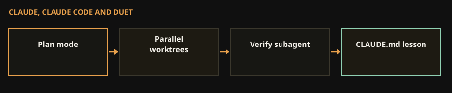
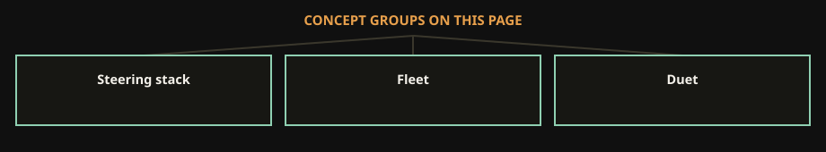

Claude, Claude Code and Duet
Claude power use rests on a steering stack. Each layer loads at a set time, costs a set amount of context, and holds a set level of force.

Version facts
Anthropic homepage index lists Fable 5.2 and Mythos 5.2 on 9 November 2026, Opus 5.5 on 22 September, Sonnet 5.5 on 28 September and Haiku 5.5 on 7 October. Price summaries list Fable at 8 and 40 dollars, Opus at 4 and 20, Sonnet at 2 and 10 per 1M tokens. Medium to High
Claude Code official changelog has a 19 November 2026 entry. A tracker lists version 2.1.325 on 13 November 2026. Exact latest patch stays open. INSUFFICIENT_EVIDENCE for exact patch
Claude Duet launch date: 21 October 2026. Duet runs on its own virtual machine, builds on Opus 5.5, sends a morning brief, checks apps each few hours, and asks before send, pay, sign or delete acts. Plan list sources disagree on Ultra. High for product shape
The steering stack, from the official Anthropic guide
| Method | Load time | Use |
|---|---|---|
| Root CLAUDE.md | Session start, always | Keep under 200 lines. Own the file. Review the file as code. |
| Subfolder CLAUDE.md | On demand | Local rules for one area. |
| Rules in .claude/rules | Path match | Rules with a paths frontmatter field apply to one path set only. |
| Skills | Name and short text at start, body on call | Repeat procedures with low base context cost. |
| Subagents | Own context | Only the final message returns. Nest depth can reach five levels per guide. |
| Hooks | Life cycle events | Deterministic acts. A PreToolUse hook can deny a tool call. Hooks bypass compaction. |
| Output styles | System level | Highest weight. Use with care. |
Workflow C1. Boris Cherny parallel fleet
- Run five Claude sessions in parallel in a terminal. Number tabs 1 to 5. System alerts name the session that needs input.
- Place each session in a separate git checkout or worktree.
- Run five to ten more sessions on the web app. Move a local session to web with the ampersand key. Bring a session back with a teleport flag.
- Start sessions from a phone app.
- Use the strongest model with full thought for agentic work. Principle in source: steer less, gain speed in the end.
- Turn any task done more than once a day into a slash command. Team example: a commit, push and pull request command in .claude/commands.
- Add phase subagents. One subagent cleans code after main work. One verify app subagent tests end to end.
Throughput claim: 20 to 30 pull requests per day in podcast reports. Low to Medium
Workflow C2. Plan mode to auto accept
- Start a hard task in Plan mode.
- Revise the plan with Claude till the plan earns trust.
- Team variant: Claude A writes a plan. Claude B reviews the plan as a staff engineer.
- Switch to auto accept edits. Let Claude build in one pass.
- On failure, return to Plan mode. Do not push a bad path.
Workflow C3. CLAUDE.md as team memory
- Keep one shared CLAUDE.md per repo in git.
- Add a lesson after each correction.
- Tag the Claude account in a pull request review to add a lesson in that same pull request.
- Prune the file. Move long or local rules to path rules or skills.
Workflow C4. Anthropic research pipeline
- A lead agent reads a query and saves a plan to memory. Memory survives context cut.
- The lead spawns parallel subagents. Each subagent holds distinct tools and a distinct path.
- Each subagent compresses finds for the lead.
- The lead builds a synthesis. A citation agent maps claims to sources.
Anthropic internal eval in the official post: a multi agent form beat a single agent form by 90.2 percent. Cost: about 15 times the tokens of chat. Parallel work buys breadth at a token price. High
Workflow C5. Duet chief of staff loop
- Connect apps such as mail, calendar, drive and customer tools.
- Read a morning brief.
- Approve or reject action items.
- Duet acts in its own virtual machine.
- Duet checks apps each few hours and alerts only on need.
No independent hands on workflow sits in sources. Product acts come from launch reports. High for launch facts
Tutorial in eight parts
1. Question
How can one engineer ship at fleet speed with Claude Code and still trust the code?
2. Key facts
Cherny fleet facts and the official steering stack sit in sources rows 13 to 18. Plan mode, worktrees, slash commands and verify subagents recur across sources.
3. Core concepts
Worktree, plan, hook, skill, subagent, verify oracle. A worktree isolates one task. A hook enforces a rule with no model choice.
4. Patterns and feedback loops
Plan, build, verify, correct, compound. Each correction adds a permanent file change. Review uses fresh context.
5. Conflicts and common errors
A common error loads all rules at all times. Context cost rises and force drops. A second error asks the writer agent to grade own work.
6. Hypotheses
Small teams may gain more from one verify subagent than from five writer sessions. Sources support both acts. No test in sources ranks both acts for a small repo.
7. Decision support
Start with plan mode, one worktree per task, and a verify step. Add parallel sessions after the verify step holds for two weeks.
8. One bounded next action
Add one verify subagent to your repo this week. Give the subagent test commands, a browser check and a rule: report fail with proof, or pass with proof.

Visual map of this page
Three views of one page: a Mermaid flow for work order, a markmap for concept groups, and a read guide for the flow.
Mermaid source, for offline read
flowchart LR A[Plan mode] --> B[Auto accept build] B --> C[Verify subagent] C -->|fail| A C -->|pass| D[Ship PR] D --> E[Lesson to CLAUDE.md] E --> A
How to read the flow diagram. Step 1: start at the left box. Step 2: follow each arrow to the next stage. Step 3: at a branch box, read both paths before a choice. Step 4: a loop arrow means work returns for one more pass vs a test.
Markmap: concepts on this page
- Claude, Claude Code and Duet
- Steering stack
- CLAUDE.md under 200 lines
- Path rules
- Skills
- Hooks
- Subagents
- Fleet
- 5 terminal sessions
- 5 to 10 web sessions
- Slash commands
- Duet
- Own VM
- Morning brief
- Approval gates
- Steering stack